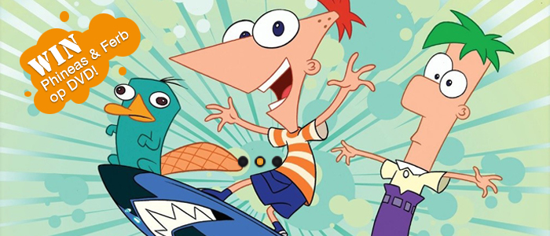
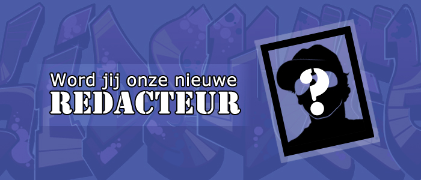
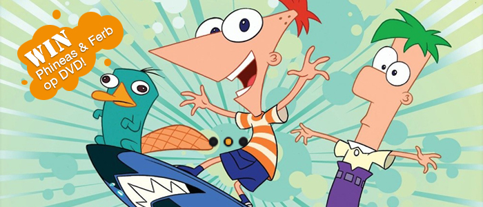
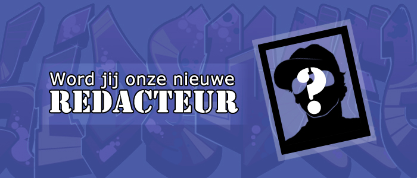
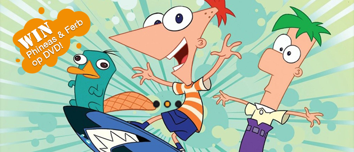
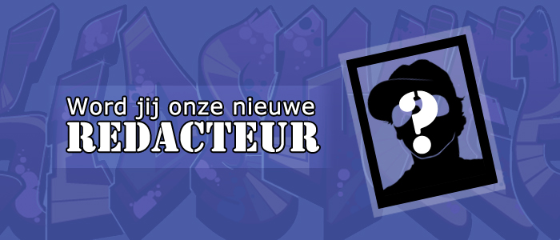
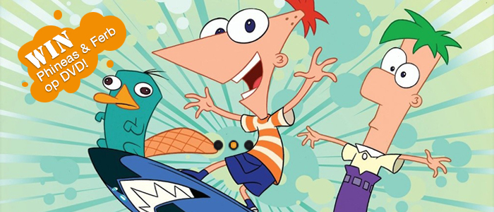
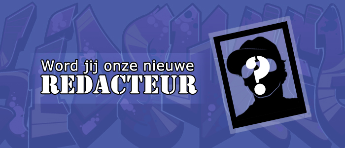

Heb je net het perfecte bed gevonden voor jouw Habbo-kamer, zijn je credits op. De enige manier om aan credits te komen, is door een sms'je te sturen. Maar dat kost geld. De stichting Mijn Kind Online wil hier een stokje voor steken.
Lees verder >>
Rachel (13 jaar) heeft zaterdag het AVRO's Junior Songfestival gewonnen met haar liedje Ik ben een Teenager.
Lees verder >>
Schrijver Simon van der Geest is de winnaar van de Gouden Griffel 2011. Tijdens het Kinderboekenbal won hij met Dissus de prijs voor het mooiste Nederlandse kinderboek.
Lees verder >>
Na Happy Feet is deze week weer een verdwaalde pinguïn gezien. Het beestje dat vermoedelijk thuis hoort in Zuid-Afrika, werd tienduizend kilometer verderop gezien op een strand in Groot-Brittannië.
Lees verder >>